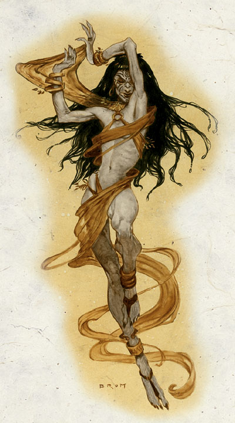
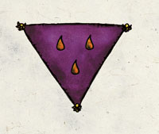

塔洛娜 Talona（剧毒与疾病女神）

费伦神系 弱等神力
别称：剧毒女士 Lady of Poison，疾病夫人 Mistress of Disease，所有瘟疫的母亲 Mother of All Plagues
圣徽：以紫色的三角形为背景，其上有三颗琥珀色的泪珠

居住界域：毁灭与绝望荒原 The Barrens of Doom and Despair
阵营：混乱邪恶 CE
神职：疾病 disease，剧毒 poison
信徒：刺客，德鲁依，医者，盗贼，受慢性病所苦之人
牧师阵营：混乱中立 CN，中立邪恶 NE，混乱邪恶 CE
神域：混乱 Chaos，毁灭 Destruction，邪恶 Evil，折磨 Suffering
喜好武器：粗糙之手 A scabrous（徒手攻击 unarmed strike）
塔洛娜常被描述成一位憔悴萎靡的苍老妇人，脸上纹满各种宗教性的刺青。她所到之处不幸与苦难必定随之出现。她的内心就像是一个任性又贪婪的孩童，但却被困在 一具（曾经美艳但）如今已饱受疾病与老化摧残的躯壳之中。她时常像孩子一样无理取闹，以希望能引起其它人注意－但这只让她像遭人抛弃的怨妇一样孤单。
塔 洛娜的教会内部有着极为严格明确的阶级划分（但也分为数个不同的教派）。除了贩售各种毒药、解毒剂、药品之外，塔洛娜的牧师在费伦各地尽可能低调地四处旅 行，不停地寻找新的疾病与感染症状，并致力于散播谣言以提升剧毒女士的威望。他们这样日复一日的努力都是为了获得尊重－希望凡人们尊重疾病夫人毁灭万物的力量、也尊敬她在费伦大陆上的代理人。终其一生，塔洛娜的牧师都投入研究魔法，并设法让自己对各式各样的疾病与毒素产生免疫力－也正因为产生了免疫力，因 此他们会照料患病之人、埋葬因病死亡之人，或是受雇为多疑的统治者、富商、贵族测试饮食是否安全无虞。如果有国家或城市胆敢驱逐或惩处塔洛娜的信徒－不论出于何种理由－那么塔洛娜的牧师很快地就会在当地引发严重的瘟疫，以作为向这种侮辱索取的「塔洛娜的代价」（Talona's price）。据谣传，有一些卑鄙的塔洛娜信徒会挑选一位富有之人作为目标，使其染上恶疾，如此一来教会便可在目标死后「接收」这些财富－在剧毒与疾病的威胁之下，真正合法的继承人也只能束手无策。
塔洛娜的牧师与德鲁依在傍晚祈祷以获得神术－不过他们每天都必须向女神进行三次祈祷（包括黄 昏这次）。每过十二天教会就会举行一个活动（开放给其它非女神信徒的外人参与），在活动中，外来的参与者会被鼓励对疾病夫人祷告，并对其教会做出捐献，以换取自己或挚爱得以脱离（或免受）死亡、瘟疫、恶疾之类的纠缠。在那一天的活动中会场上将一直飘扬着由低沉鼓乐及吟唱声交织而成的双重奏，以赞扬塔洛娜的 尊贵与大能。年轻的教会成员忙碌地在会场中穿梭，贩卖各式毒剂（当然，他们宣称这是用来除虫的）、解毒剂、以及药品，或者是协助资深的成员诊断外来者（已付费）的病情、调配处方－通常都能极准确地断出病症且加以治疗。此外，每年「丰收节」（Highharvestide）之前也会举行一年一度的仪式，让新 进的信徒得以正式加入，成为剧毒女士的侍奉者。在此一非公开的恐怖仪式中，新进牧师会在身体划上各式可怕的宗教刺青，以作为晋升的标志。许多塔洛娜的牧师与德鲁依都会兼职成为盗贼、刺客、或是神力信徒（Divine Disciple）。
历史/与众神的关系 History/Relationship：
塔 洛娜是「黑暗众神」（Dark Deities）的一员，她原本与劳微塔（Loviatar）－后者的残酷爱好深为塔洛娜所憎恨－共同侍奉巴尔（Bhaal）。自从巴尔在动荡时期中殒落之后，这两位女神都逐渐地落入莎儿（Shar）的黑暗罗网之中。不过，日前班恩（从前死亡三神中的最强者）业已重新回归，连带地这两位弱等神力的忠诚度也 随之发生裂痕。出于妒忌与自身的苦痛，塔洛娜憎恨那些善良仁慈的神祇－比如裳禔亚（Chauntea，大地母神）、梅莉凯（Mielikki，森林女神）、西凡纳司（Silvanus，自然之神）、淑妮（Sune，爱与美善女神）、莱尔拉（Lliira，欢乐女神）、克蓝沃（Klelmvor，死亡之 神）、提尔（Tyr，正义之神）、以及希昂莉亚（Shiallia，新芽女神）。
教义 Dogma：
痛苦与欢愉，一如生与死－都 是相对的存在－然而死亡的力量远大过其相对，应当对之抱持更大的尊崇与敬意。死亡是真正伟大的平衡力量，是每个人迟早都必须面对的命运。当你唯有使用匕首才能让他人「明了」你的想法时，不要有丝毫的怀疑。所有瘟疫的母亲就存在于每个人的体内，由内弱化与腐蚀正是她的伟大力量。不论你是否愿意相信或侍奉她， 她的气息永远与你同在。让所有的生命学会尊敬塔洛娜，并狂热虔诚地贡献财富给她。只要这样做，那么塔洛娜就（暂时）不会取走他们的性命。以塔洛娜之名行事－不论低调或引人注目－让凡人们知道这一切都是基于疾病夫人的意志。
--
资料来源：费伦大陆信仰与神系《Faiths & Pantheons》
译者：一凡